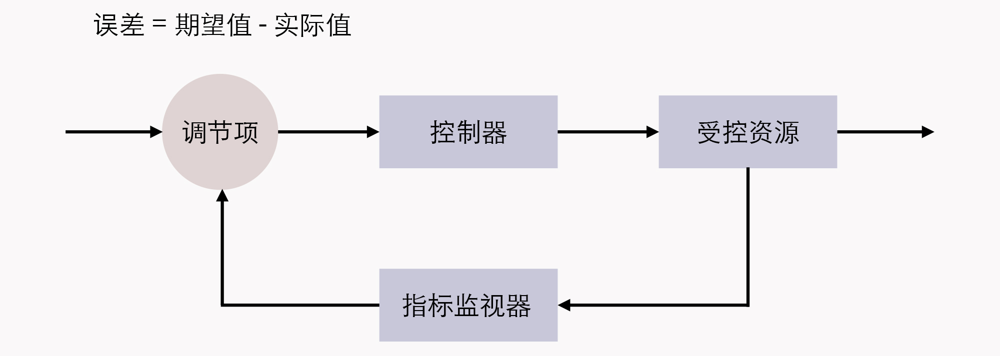
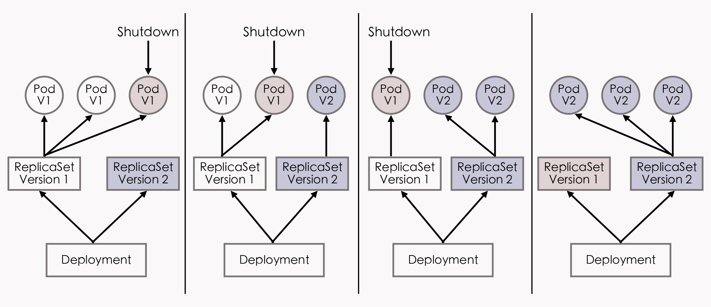

- 00 _导读 _ 什么是“The Fenix Project”？.md
- 00 开篇词 _ 如何构建一个可靠的分布式系统？.md
- 01 _ 原始分布式时代：Unix设计哲学下的服务探索.md
- 02 _ 单体系统时代：应用最广泛的架构风格.md
- 03 _ SOA时代：成功理论与失败实践.md
- 04 _ 微服务时代：SOA的革命者.md
- 05 _ 后微服务时代：跨越软件与硬件之间的界限.md
- 06 _ 无服务时代：“不分布式”云端系统的起点.md
- 07 _ 远程服务调用（上）：从本地方法到远程方法的桥梁.md
- 08 _ 远程服务调用（下）：如何选择适合自己的RPC框架？.md
- 09 _ RESTful服务（上）：从面向过程编程到面向资源编程.md
- 10 _ RESTful服务（下）：如何评价服务是否RESTful？.md
- 11 _ 本地事务如何实现原子性和持久性？.md
- 12 _ 本地事务如何实现隔离性？.md
- 13 _ 全局事务和共享事务是如何实现的？.md
- 14 _ 分布式事务之可靠消息队列.md
- 15 _ 分布式事务之TCC与SAGA.md
- 16 _ 域名解析系统，优化HTTP性能的第一步.md
- 17 _ 客户端缓存是如何帮助服务器分担流量的？.md
- 18 _ 传输链路，优化HTTP传输速度的小技巧.md
- 19 _ 如何利用内容分发网络来提高网络性能？.md
- 20 _ 常见的四层负载均衡的工作模式是怎样的？.md
- 21 _ 服务端缓存的三种属性.md
- 22 _ 分布式缓存如何与本地缓存配合，提高系统性能？.md
- 23 _ 认证：系统如何正确分辨操作用户的真实身份？.md
- 24 _ 授权（上）：系统如何确保授权的过程可靠？.md
- 25 _ 授权（下）：系统如何确保授权的结果可控？.md
- 26 _ 凭证：系统如何保证与用户之间的承诺是准确完整且不可抵赖的？.md
- 27 _ 保密：系统如何保证敏感数据无法被内外部人员窃取滥用？.md
- 28 _ 传输（上）：传输安全的基础，摘要、加密与签名.md
- 29 _ 传输（下）：数字证书与传输安全层.md
- 30 _ 验证：系统如何确保提交给服务的数据是安全的？.md
- 31 _ 分布式共识（上）：想用好分布式框架，先学会Paxos算法吧.md
- 32 _ 分布式共识（下）：Multi Paxos、Raft与Gossip，分布式领域的基石.md
- 33 _ 服务发现如何做到持续维护服务地址在动态运维中的时效性？.md
- 34 _ 路由凭什么作为微服务网关的基础职能？.md
- 35 _ 如何在客户端实现服务的负载均衡？.md
- 36 _ 面对程序故障，我们该做些什么？.md
- 37 _ 要实现某种容错策略，我们该怎么做？.md
- 38 _ 限流的目标与模式.md
- 39 _ 如何构建零信任网络安全？.md
- 40 _ 如何实现零信任网络下安全的服务访问？.md
- 41 _ 分布式架构中的可观测到底说的是什么？.md
- 42 _ 分析日志真的没那么简单.md
- 43 _ 一个完整的分布式追踪系统是什么样子的？.md
- 44 _ 聚合度量能给我们解决什么问题？.md
- 45 _ 模块导学：从微服务到云原生.md
- 46 _ 容器的崛起（上）：文件、访问、资源的隔离.md
- 47 _ 容器的崛起（下）：系统、应用、集群的封装.md
- 48 _ 以容器构建系统（上）：隔离与协作.md
- 49 _ 以容器构建系统（下）：韧性与弹性.md
- 50 _ 应用为中心的封装（上）：Kustomize与Helm.md
- 51 _ 应用为中心的封装（下）：Operator与OAM.md
- 52 _ Linux网络虚拟化（上）：信息是如何通过网络传输被另一个程序接收到的？.md
- 53 _ Linux网络虚拟化（下）：Docker所提供的容器通讯方案有哪些？.md
- 54 _ 容器网络与生态：与CNM竞争过后的CNI下的网络插件生态.md
- 55 _ 谈谈Kubernetes的存储设计理念.md
- 56 _ Kubernetes存储扩展架构：一个真实的存储系统如何接入或移除新存储设备？.md
- 57 _ Kubernetes存储生态系统：几种有代表性的CSI存储插件的实现.md
- 58 _ Kubernetes的资源模型与调度器设计.md
- 59 _ 透明通讯的涅槃（上）：通讯的成本.md
- 60 _ 透明通讯的涅槃（下）：控制平面与数据平面.md
- 61 _ 服务网格与生态：聊聊服务网格的两项标准规范.md
- 63 _ 基于Spring Boot的单体架构.md
- 64 _ 基于Spring Cloud的微服务架构.md
- 65 _ 基于Kubernetes的微服务架构.md
- 66 _ 基于Istio的服务网格架构.md
- 67 _ 基于云计算的无服务架构.md
- 春节特别放送（上）_ 有的放矢，事半功倍.md
- 春节特别放送（下）_ 积累沉淀，知行合一.md
- 用户故事 _ 詹应达：持续成长，不惧未来.md
- 结束语 _ 程序员之路.md
- 结课测试 _ 一套习题，测出你的掌握程度.md
49 _ 以容器构建系统（下）：韧性与弹性
你好，我是周志明。今天，我们接着上节课“隔离与协作”的话题，继续来讨论容器编排的另一个目标：韧性与弹性。
我曾经看过一部电影，叫做《Bubble Boy》，主要讲了一个体内没有任何免疫系统的小男孩，每天只能生活在无菌的圆形气球里，对常人来说不值一提的细菌，都会直接威胁到他的性命。小男孩尽管能够降生于世，但并不能真正地与世界交流，这种生命是极度脆弱的。
真实世界的软件系统，跟电影世界中的小男孩所面临的处境其实差不多。
要知道，让容器能够相互连通、相互协作，仅仅是以容器构建系统的第一步，我们不仅希望得到一个能够运行起来的系统，而且还希望得到一个能够健壮运行的系统、能够抵御意外与风险的系统。
当然，在Kubernetes的支持下，你确实可以直接创建Pod将应用运行起来，但这样的应用就像是电影中只能存活在气球中的小男孩一样脆弱，无论是软件缺陷、意外操作或者硬件故障，都可能导致在复杂协作的过程中某个容器出现异常，进而出现系统性的崩溃。
为了解决这个问题，架构师专门设计了服务容错的策略和模式（你可以回顾复习第36、37讲）。而Kubernetes作为云原生时代的基础设施，也尽力帮助我们以最小的代价来实现容错，为系统健壮运行提供底层支持。
那么，Kubernetes所提供的帮助，就是指除资源模型之外的另一个核心设计理念：控制器设计模式。它的其中一种重要应用，就是这节课我们要探讨的主题，实现具有韧性与弹性的系统。
接下来，我们就从如何解决场景四的问题开始，一起来探讨下为什么Kubernetes要设计这些控制器，以及为什么这些控制器会被设计成现在这种样子。
编排系统如何快速调整出错的服务？
我们先来看看场景四的问题：
场景四：假设有个由数十个Node、数百个Pod、近千个Container所组成的分布式系统，作为管理员，你想要避免该系统因为外部流量压力、代码缺陷、软件更新、硬件升级、资源分配等各种原因而出现中断的状况，那么你希望编排系统能为你提供何种支持？
作为用户，我们当然最希望容器编排系统能自动地把所有意外因素都消灭掉，让每一个服务都永远健康，永不出错。但永不出错的服务是不切实际的，只有凑齐七颗龙珠才可能办得到。
所以我们就只能退而求其次，让编排系统在这些服务出现问题、运行状态不正确的时候，能自动将它们调整成正确的状态。
这种需求听起来其实也挺贪心的，但已经具备足够的可行性了。而且我们可以采取的应对办法在工业控制系统里，已经有了非常成熟的应用，它叫做控制回路（Control Loop）。
关于控制回路的一般工作过程，在Kubernetes官方文档中，是以“房间里空调自动调节温度”为例来具体介绍的：当你设置好了温度，就是告诉空调你对温度的“期望状态”（Desired State），而传感器测量出的房间实际温度是“当前状态”（Current State）。
那么，根据当前状态与期望状态的差距，控制器对空调制冷的开关进行调节控制，就能让其当前状态逐渐接近期望状态。

由此，我们把这种控制回路的思想迁移应用到容器编排上，自然会为Kubernetes中的资源附加上了期望状态与实际状态两项属性。
不管是已经出现在上节课的资源模型中，用于抽象容器运行环境的计算资源，还是没有登场的对应于安全、服务、令牌、网络等功能的资源（第40讲中曾提及过），如果用户想使用这些资源来实现某种需求，并不能像平常编程那样，去调用某个或某一组方法来达成目的。而是要通过描述清楚这些资源的期望状态，由Kubernetes中对应监视这些资源的控制器，来驱动资源的实际状态逐渐向期望状态靠拢，才能够达成自己的目的。
而这种交互风格就被叫做Kubernetes的声明式API，如果你之前有过实际操作Kubernetes的经验，那你日常在元数据文件中的spec字段所描述的就是资源的期望状态。
额外知识：Kubernates的资源对象与控制器- 目前，Kubernetes已内置支持相当多的资源对象，并且还可以使用CRD（Custom Resource Definition）来自定义扩充，你可以使用kubectl api-resources来查看它们。下面我根据用途分类，给你列举了一些常见的资源：-
用于描述如何创建、销毁、更新、扩缩Pod，包括：Autoscaling（HPA）、CronJob、DaemonSet、Deployment、Job、Pod、ReplicaSet、StatefulSet
用于配置信息的设置与更新，包括：ConfigMap、Secret
用于持久性地存储文件或者Pod之间的文件共享，包括：Volume、LocalVolume、PersistentVolume、PersistentVolumeClaim、StorageClass
用于维护网络通信和服务访问的安全，包括：SecurityContext、ServiceAccount、Endpoint、NetworkPolicy
用于定义服务与访问，包括：Ingress、Service、EndpointSlice
用于划分虚拟集群、节点和资源配额，包括：Namespace、Node、ResourceQuota-
这些资源在控制器管理框架中，一般都会有相应的控制器来管理，这里我也列举了一些常见的控制器，按照它们的启动情况进行了分类，如下：-
必须启用的控制器：EndpointController、ReplicationController、PodGCController、ResourceQuotaController、NamespaceController、ServiceAccountController、GarbageCollectorController、DaemonSetController、JobController、DeploymentController、ReplicaSetController、HPAController、DisruptionController、StatefulSetController、CronJobController、CSRSigningController、CSRApprovingController、TTLController
默认启用的可选控制器，可通过选项禁止：TokenController、NodeController、ServiceController、RouteController、PVBinderController、AttachDetachController
默认禁止的可选控制器，可通过选项启用：BootstrapSignerController、TokenCleanerController
那么，与资源相对应的，只要是实际状态有可能发生变化的资源对象，就通常都会由对应的控制器进行追踪，每个控制器至少会追踪一种类型的资源。
因此，为了管理众多资源控制器，Kubernetes设计了统一的控制器管理框架（kube-controller-manager）来维护这些控制器的正常运作，并设计了统一的指标监视器（kube-apiserver），用于在控制器工作时，为它提供追踪资源的度量数据。
Kubernetes控制器模式的工作原理
那么Kubernetes具体是怎么做的呢？在回答之前，我想先解释下，毕竟我们不是在写Kubernetes的操作手册，没办法展开和详解每个控制器，所以下面我就以两三种资源和控制器为代表，来举例说明一下。
OK，回到问题上。这里我们只要把场景四进一步具体化，转换成下面的场景五，就可以得到一个很好的例子了。
比如说，我们就以部署控制器（Deployment Controller）、副本集控制器（ReplicaSet Controller）和自动扩缩控制器（HPA Controller）为例，来看看Kubernetes控制器模式的工作原理。
场景五：通过服务编排，我们让任何分布式系统自动实现以下三种通用的能力：
- Pod出现故障时，能够自动恢复，不中断服务；
- Pod更新程序时，能够滚动更新，不中断服务；
- Pod遇到压力时，能够水平扩展，不中断服务。
在这节课的一开始我提到过，虽然Pod本身也是资源，完全可以直接创建，但由Pod直接构成的系统是十分脆弱的，就像是那个气球中的小男孩，所以在实际生产中并不提倡。
正确的做法是通过副本集（ReplicaSet）来创建Pod。
ReplicaSet也是一种资源，它是属于工作负荷一类的资源，代表了一个或多个Pod副本的集合，你可以在ReplicaSet资源的元数据中，描述你期望Pod副本的数量（即spec.replicas的值）。
当ReplicaSet成功创建之后，副本集控制器就会持续跟踪该资源，一旦有Pod发生崩溃退出，或者状态异常（默认是靠进程返回值，你还可以在Pod中设置探针，以自定义的方式告诉Kubernetes出现何种情况Pod才算状态异常），ReplicaSet都会自动创建新的Pod来替代异常的Pod；如果因异常情况出现了额外数量的Pod，也会被ReplicaSet自动回收掉。
总之就是确保在任何时候，集群中这个Pod副本的数量都会向期望状态靠拢。
另外，我们还要清楚一点，就是ReplicaSet本身就能满足场景五中的第一项能力，可以保证Pod出现故障时自动恢复。但是在升级程序版本时，ReplicaSet就不得不主动中断旧Pod的运行，重新创建新版的Pod了，而这会造成服务中断。
因此，对于那些不允许中断的业务，以前的Kubernetes曾经提供过kubectl rolling-update命令，来辅助实现滚动更新。
所谓的滚动更新（Rolling Updates），是指先停止少量旧副本，维持大量旧副本继续提供服务，当停止的旧副本更新成功，新副本可以提供服务以后，再重复以上操作，直至所有的副本都更新成功。我们把这个过程放到ReplicaSet上，就是先创建新版本的ReplicaSet，然后一边让新ReplicaSet逐步创建新版Pod的副本，一边让旧的ReplicaSet逐渐减少旧版Pod的副本。
而到了现在，之所以kubectl rolling-update命令会被淘汰，其实是因为这样的命令式交互，完全不符合Kubernetes的设计理念（这是台面上的说法，我觉得淘汰的根本原因主要是因为它不够好用）。如果你希望改变某个资源的某种状态，就应该将期望状态告诉Kubernetes，而不是去教Kubernetes具体该如何操作。
所以，现在新的部署资源（Deployment）与部署控制器就被设计出来了。具体的实现步骤是这样的：我们可以由Deployment来创建ReplicaSet，再由ReplicaSet来创建Pod，当我们更新了Deployment中的信息以后（比如更新了镜像的版本），部署控制器就会跟踪到新的期望状态，自动地创建新ReplicaSet，并逐渐缩减旧的ReplicaSet的副本数，直到升级完成后，彻底删除掉旧ReplicaSet。这个工作过程如下图所示：

好，我们再来看看场景五中的最后一种情况。
你可能会知道，在遇到流量压力时，管理员完全可以手动修改Deployment中的副本数量，或者通过kubectl scale命令指定副本数量，促使Kubernetes部署更多的Pod副本来应对压力。然而这种扩容方式不仅需要人工参与，而且只靠人类经验来判断需要扩容的副本数量，也不容易做到精确与及时。
为此，Kubernetes又提供了Autoscaling资源和自动扩缩控制器，它们能够自动地根据度量指标，如处理器、内存占用率、用户自定义的度量值等，来设置Deployment（或者ReplicaSet）的期望状态，实现当度量指标出现变化时，系统自动按照“Autoscaling→Deployment→ReplicaSet→Pod”这样的顺序层层变更，最终实现根据度量指标自动扩容缩容。
小结
故障恢复、滚动更新、自动扩缩这些特性，在云原生时代中常常被概括成服务的弹性（Elasticity）与韧性（Resilience），ReplicaSet、Deployment、Autoscaling的用法，也是所有Kubernetes教材资料中都会讲到的“基础必修课”。
学完了这两节课，我还想再说明一点：如果你准备学习Kubernetes或者其他云原生的相关技术，我建议你最好不要死记硬背地学习每个资源的元数据文件该如何编写、有哪些指令、有哪些功能，更好的方式是站在解决问题的角度，去理解为什么Kubernetes要设计这些资源和控制器，理解为什么这些资源和控制器会被设计成现在这种样子。
一课一思
如果你觉得已经理解了前面几种资源和控制器的例子，那不妨思考几个问题：
- 假设我想限制某个Pod持有的最大存储卷数量，应该如何设计？
- 假设集群中某个Node发生硬件故障，Kubernetes要让调度任务避开这个Node，应该如何设计？
- 假设一旦这个Node重新恢复，Kubernetes要能尽快利用上面的资源，又该如何去设计？
其实，只要你真正接受了资源与控制器是贯穿整个Kubernetes的两大设计理念，即便不去查文档手册，也应该能推想出个大概轮廓，你在这个基础上再去看手册或者源码的时候，想必就能够事半功倍。
好，欢迎给我留言，分享你的答案。如果你觉得有收获，也欢迎把今天的内容分享给更多的朋友。感谢你的阅读，我们下一讲再见。
© 2019 - 2023 Liangliang Lee. Powered by gin and hexo-theme-book.